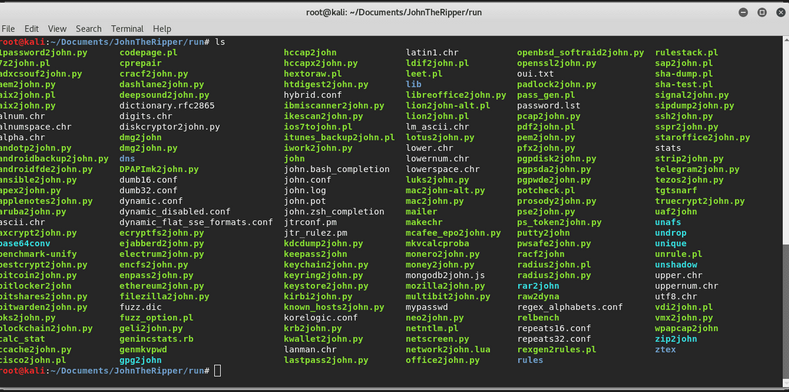
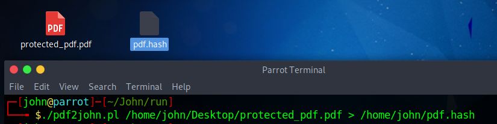

Apprenez à craquer un PDF protégé
par force brute en utilisant John The
Ripper, le craqueur de mot de
passe rapide de Parrot.
1. Construire les binaires de JohnTheRipper
2. Générer un fichier de hachage PDF
3. Brute Force avec John
Nous allons devoir travailler avec la version Jumbo de JohnTheRipper. Il s'agit d'une version "jumbo" de John the Ripper, améliorée par la communauté. Elle contient beaucoup de code, de
documentation et de données fournis par la communauté des utilisateurs. Il ne s'agit pas du code "officiel" de John the Ripper. Il est très facile d'ajouter du nouveau code à jumbo : les
exigences de qualité sont faibles. Cela signifie que vous obtiendrez beaucoup de fonctionnalités qui ne sont pas assez "matures" ou qui ne conviennent pas au JtR officiel, ce qui signifie
également que des bogues sont à prévoir dans ce code. Obtenez le code source de JohnTheRipper (la branche "bleeding-jumbo" (par défaut) est basée sur 1.8.0-Jumbo-1) depuis le dépôt sur
Github avec la commande suivante (ou téléchargez le zip avec le contenu et extrayez-le dans un répertoire quelconque) :
git clone https://github.com/magnumripper/JohnTheRipper.git
Cela créera un répertoire nommé John dans le répertoire courant. Passez dans le répertoire de John avec la commande suivante :
cd ./JohnTheRipper/src
Procédez au téléchargement des listes de paquets depuis les dépôts avec la commande suivante :
sudo apt-get update
Et installez libssl :
sudo apt-get install libssl-dev
La bibliothèque nécessite l'installation de libssl (openssl) dans votre système, donc si vous ne l'avez pas, la commande précédente fera
l'affaire pour remplir cette condition. Une fois le dépôt cloné, entrez dans le répertoire source qui contient le code source de JohnTheRipper :
cd ./JohnTheRipper/src
Dans ce répertoire, nous allons procéder à la construction en suivant les instructions suivantes :
./configure && make
Cette version de Jumbo a autoconf qui supporte la chaîne très commune, vous permettant de compiler les sources sur un système de type Unix.
Une fois le processus de compilation terminé, basculez dans le répertoire d'exécution à l'intérieur du répertoire JohnTheRipper :
cd ..
A l'intérieur de ce répertoire vous trouverez (après la construction) tous les outils que la bibliothèque a à offrir (y compris john lui-même),
vous pouvez lister le répertoire à comparer.
cd ./run
ls
Vous trouverez tous les outils de JohnTheRipper dans ce répertoire :

Maintenant que vous disposez des outils nécessaires, commençons par l'attaque par force brute.
JohnTheRipper, comme mentionné au début de l'article, n'est pas lié en soi aux PDF, mais aux mots de passe et à la sécurité. C'est pourquoi
vous devrez créer le fichier de hachage du PDF en utilisant l'outil pdf2john.pl (disponible dans le répertoire run après avoir compilé à partir
des sources). Cet outil vous permet d'obtenir le hash (Read meta information) du fichier à travers ce script perl, qui peut être extrait dans un
nouveau fichier avec la commande suivante :
pdf2john.pl /root/Desktop/pdf_protected.pdf > /root/Desktop/pdf.hash
Cette commande créera un fichier .hash dans le répertoire défini. C'est ce fichier que nous utiliserons pour travailler avec l'outil JohnTheRipper :

Le fichier pdf.hash contient un texte du type :
/root/Desktop/pdf_protected.pdf:$pdf$4*4*128*-4*1*16*d22933dd530666ced293ccf5f860214f*32*ab12d2e30eae3d43d69ac57efc2918c128bf4e5e4e758a4164004e56fffa0108
Maintenant que nous avons le fichier de hachage, nous pouvons procéder au brute force à l'aide de l'outil CLI de John.
Maintenant que nous avons le fichier .hash du PDF avec le mot de passe que nous voulons déverrouiller, il nous suffit de passer le fichier
en argument à l'outil CLI de JohnTheRipper (dans le répertoire d'exécution) :
john pdf.hash
Ceci utilisera UTF-8 comme encodage d'entrée par défaut et commencera à deviner le mot de passe du fichier PDF en utilisant la liste
de mots par défaut de la bibliothèque. S'il est trouvé, il affichera le mot de passe et le chemin vers le PDF protégé :
Si vous essayez d'exécuter la commande sur le même fichier après que le mot de passe a été deviné, vous verrez les messages suivants : "No
password hashes loaded", "No password hashes loaded", ou "No password hashes left to crack". Les mots de passe craqués seront imprimés
sur le terminal et enregistrés dans le fichier appelé $JOHN/john.pot. Le fichier $JOHN/john.pot est également utilisé
Si c'est le cas, vous pourrez voir à nouveau le mot de passe du même fichier en utilisant l'option --show :
john --show /home/john/John/run/pdf.hash
4. Utiliser une liste de mots personnalisée
Si vous ne souhaitez pas utiliser le fichier password.lst par défaut de JohnTheRipper, indiquez simplement le chemin vers le nouveau fichier
en utilisant l'argument --wordlist :
john --wordlist=password.lst protected_pdf.hash
En guise de recommandation finale, l'outil permet de craquer un grand nombre de fichiers, il est donc conseillé de lire la documentation de la
bibliothèque Le reste de la documentation se trouve dans des fichiers séparés, listés ici dans l'ordre de lecture recommandé :
INSTALL - Instructions d'installation
OPTIONS - options de la ligne de commande et utilitaires supplémentaires
EXEMPLES - exemples d'utilisation - fortement recommandé
MODES - Modes de craquage : ce qu'ils sont
FAQ - Questions fréquemment posées
BUGS - Liste des bogues connus
DYNAMIC - Comment utiliser le format dynamique dans le JtR
DYNAMIC COMPILER FORMATS - Liste des formats de hachage connus construits à l'aide du compilateur dynamique
DYNAMIC_SCRIPTING - comment construire/optimiser un format qui utilise la dynamique
README.bash-completion - Comment activer la complétion bash pour JtR
CONTACT (*) - comment contacter l'auteur ou obtenir de l'aide d'une autre manière
CONFIG (*) - comment personnaliser l'application
EXTERNAL (*) - définir un mode externe
RULES (*) - syntaxe des règles de la liste de mots
CHANGES (*) - Historique des modifications
CREDITS (*) - Crédits
LICENSE - droits d'auteur et conditions de licence
COPYING - GNU GPL version 2, comme référencé par LICENSE ci-dessus
(*) la plupart des utilisateurs peuvent ignorer ces éléments.
Joyeux hacking !